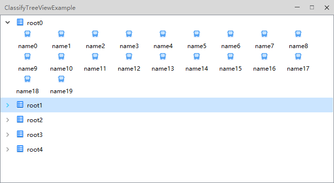

QCtmClassifyTreeView Class
归类树视图. More...
| Header: | #include <QCtmClassifyTreeView.h> |
| Inherits: | QAbstractItemView |
Public Functions
| QCtmClassifyTreeView(QWidget *parent) | |
| virtual | ~QCtmClassifyTreeView() |
| int | horizontalSpace() const |
| QSize | iconItemSize() const |
| int | indentation() const |
| void | setHorizontalSpace(int space) |
| void | setIconItemSize(const QSize &size) |
| void | setIndentation(int i) |
| void | setVerticalSpace(int space) |
| int | verticalSpace() const |
Reimplemented Public Functions
| virtual QModelIndex | indexAt(const QPoint &point) const override |
| virtual void | scrollTo(const QModelIndex &index, QAbstractItemView::ScrollHint hint = EnsureVisible) override |
| virtual void | setModel(QAbstractItemModel *model) override |
| virtual QRect | visualRect(const QModelIndex &index) const override |
Public Slots
| void | collapse(const QModelIndex &index) |
| void | collapseAll() |
| void | expand(const QModelIndex &index) |
| void | expandAll() |
Protected Functions
| virtual void | initStyleOption(QCtmClassifyTreeNode *node, QStyleOptionViewItem &option) |
| virtual void | relayoutNodes() |
Reimplemented Protected Functions
| virtual int | horizontalOffset() const override |
| virtual bool | isIndexHidden(const QModelIndex &index) const override |
| virtual void | leaveEvent(QEvent *event) override |
| virtual void | mouseMoveEvent(QMouseEvent *event) override |
| virtual void | mousePressEvent(QMouseEvent *event) override |
| virtual void | mouseReleaseEvent(QMouseEvent *event) override |
| virtual QModelIndex | moveCursor(QAbstractItemView::CursorAction cursorAction, Qt::KeyboardModifiers modifiers) override |
| virtual void | paintEvent(QPaintEvent *event) override |
| virtual void | resizeEvent(QResizeEvent *event) override |
| virtual void | setSelection(const QRect &rect, QItemSelectionModel::SelectionFlags flags) override |
| virtual void | updateGeometries() override |
| virtual int | verticalOffset() const override |
| virtual QRegion | visualRegionForSelection(const QItemSelection &selection) const override |
Detailed Description
截图:

Member Function Documentation
QCtmClassifyTreeView::QCtmClassifyTreeView(QWidget *parent)
构造函数 parent.
[virtual noexcept] QCtmClassifyTreeView::~QCtmClassifyTreeView()
析构函数.
[slot] void QCtmClassifyTreeView::collapse(const QModelIndex &index)
收缩 index 项目.
See also expand and collapseAll.
[slot] void QCtmClassifyTreeView::collapseAll()
收缩所有项目.
See also collapse and collapseAll.
[slot] void QCtmClassifyTreeView::expand(const QModelIndex &index)
展开 index 项目.
See also expandAll and collapse.
[slot] void QCtmClassifyTreeView::expandAll()
展开所有项目.
See also expand and collapseAll.
[override virtual protected] int QCtmClassifyTreeView::horizontalOffset() const
Reimplements: QAbstractItemView::horizontalOffset() const.
int QCtmClassifyTreeView::horizontalSpace() const
返回水平间隔像素.
See also setHorizontalSpace.
QSize QCtmClassifyTreeView::iconItemSize() const
返回图标项目的大小.
See also setIconItemSize.
int QCtmClassifyTreeView::indentation() const
返回缩进像素.
See also setIndentation.
[override virtual] QModelIndex QCtmClassifyTreeView::indexAt(const QPoint &point) const
Reimplements: QAbstractItemView::indexAt(const QPoint &point) const.
[virtual protected] void QCtmClassifyTreeView::initStyleOption(QCtmClassifyTreeNode *node, QStyleOptionViewItem &option)
初始化 node 对应的风格选项 option.
[override virtual protected] bool QCtmClassifyTreeView::isIndexHidden(const QModelIndex &index) const
Reimplements: QAbstractItemView::isIndexHidden(const QModelIndex &index) const.
[override virtual protected] void QCtmClassifyTreeView::leaveEvent(QEvent *event)
Reimplements: QWidget::leaveEvent(QEvent *event).
[override virtual protected] void QCtmClassifyTreeView::mouseMoveEvent(QMouseEvent *event)
Reimplements: QAbstractItemView::mouseMoveEvent(QMouseEvent *event).
[override virtual protected] void QCtmClassifyTreeView::mousePressEvent(QMouseEvent *event)
Reimplements: QAbstractItemView::mousePressEvent(QMouseEvent *event).
[override virtual protected] void QCtmClassifyTreeView::mouseReleaseEvent(QMouseEvent *event)
Reimplements: QAbstractItemView::mouseReleaseEvent(QMouseEvent *event).
[override virtual protected] QModelIndex QCtmClassifyTreeView::moveCursor(QAbstractItemView::CursorAction cursorAction, Qt::KeyboardModifiers modifiers)
Reimplements: QAbstractItemView::moveCursor(QAbstractItemView::CursorAction cursorAction, Qt::KeyboardModifiers modifiers).
[override virtual protected] void QCtmClassifyTreeView::paintEvent(QPaintEvent *event)
Reimplements: QAbstractScrollArea::paintEvent(QPaintEvent *event).
[virtual protected] void QCtmClassifyTreeView::relayoutNodes()
更新布局.
[override virtual protected] void QCtmClassifyTreeView::resizeEvent(QResizeEvent *event)
Reimplements: QAbstractItemView::resizeEvent(QResizeEvent *event).
[override virtual] void QCtmClassifyTreeView::scrollTo(const QModelIndex &index, QAbstractItemView::ScrollHint hint = EnsureVisible)
Reimplements: QAbstractItemView::scrollTo(const QModelIndex &index, QAbstractItemView::ScrollHint hint).
void QCtmClassifyTreeView::setHorizontalSpace(int space)
设置水平间隔像素 space.
See also horizontalSpace.
void QCtmClassifyTreeView::setIconItemSize(const QSize &size)
设置图标项目的大小 size.
See also iconItemSize.
void QCtmClassifyTreeView::setIndentation(int i)
设置缩进像素 i.
See also indentation.
[override virtual] void QCtmClassifyTreeView::setModel(QAbstractItemModel *model)
Reimplements: QAbstractItemView::setModel(QAbstractItemModel *model).
[override virtual protected] void QCtmClassifyTreeView::setSelection(const QRect &rect, QItemSelectionModel::SelectionFlags flags)
Reimplements: QAbstractItemView::setSelection(const QRect &rect, QItemSelectionModel::SelectionFlags flags).
void QCtmClassifyTreeView::setVerticalSpace(int space)
设置垂直间隔像素 space.
See also verticalSpace.
[override virtual protected] void QCtmClassifyTreeView::updateGeometries()
Reimplements: QAbstractItemView::updateGeometries().
[override virtual protected] int QCtmClassifyTreeView::verticalOffset() const
Reimplements: QAbstractItemView::verticalOffset() const.
int QCtmClassifyTreeView::verticalSpace() const
返回垂直间隔像素.
See also setVerticalSpace.
[override virtual] QRect QCtmClassifyTreeView::visualRect(const QModelIndex &index) const
Reimplements: QAbstractItemView::visualRect(const QModelIndex &index) const.
[override virtual protected] QRegion QCtmClassifyTreeView::visualRegionForSelection(const QItemSelection &selection) const
Reimplements: QAbstractItemView::visualRegionForSelection(const QItemSelection &selection) const.